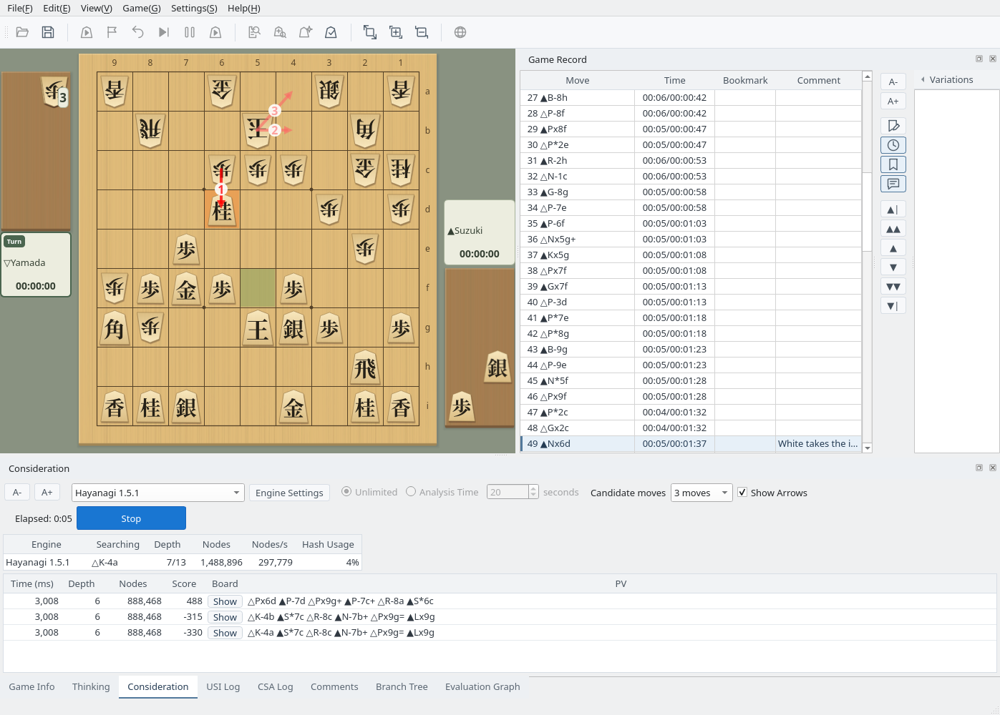
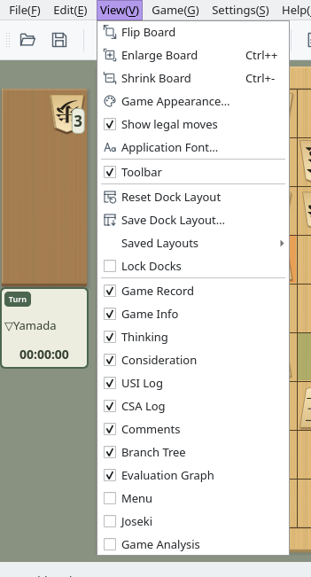
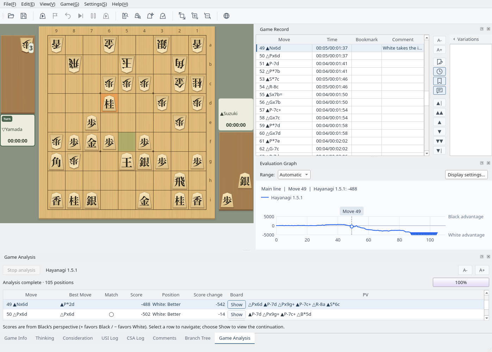
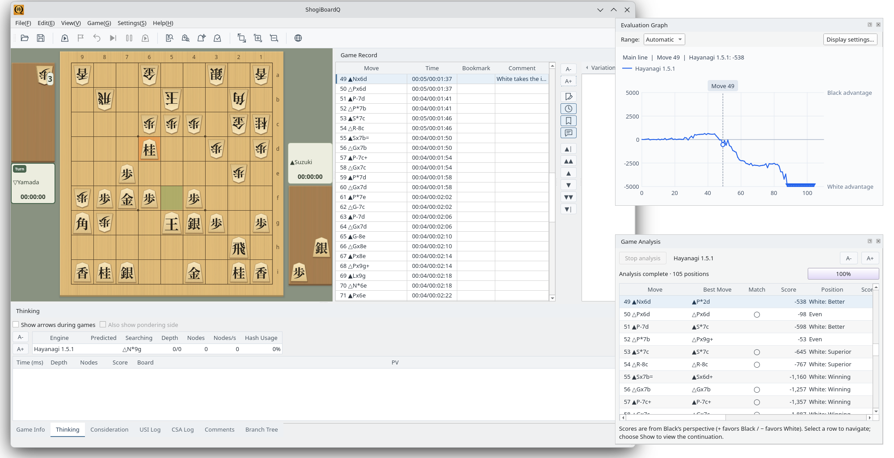
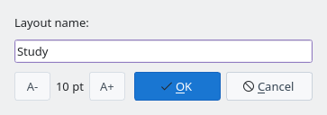
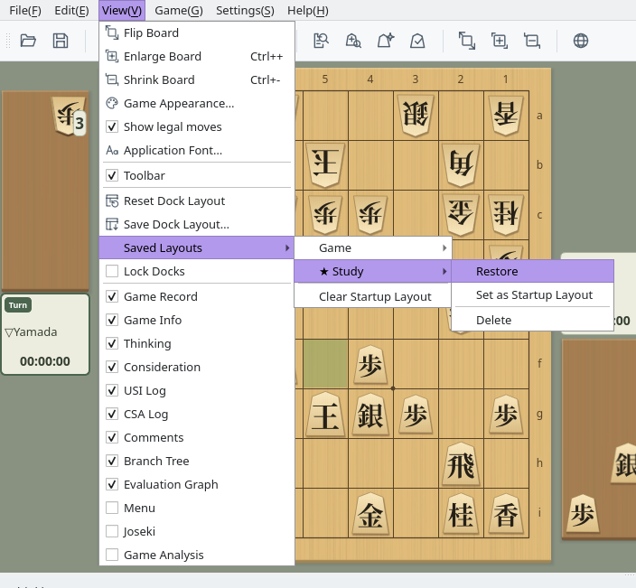

Arrange panels freely to customize the window
Screenshots were captured on Linux with the English interface.
The game record, thinking and other parts of the main window are dock panels
Game Record sits to the right of the board, and Game Info, Thinking, Consideration, USI Log, CSA Log, Comments, Branch Tree and Evaluation Graph are grouped as tabs below. Click a tab to switch the panel shown.
Menu and Joseki are hidden at first. Game Analysis appears when you start analyzing a game record.

Default layout: the game record on the right and tabs such as Thinking and Consideration below (during consideration)
The lower part of the View menu lists the panels; check one to show it and uncheck it to hide it. The × at the right of a panel's title bar also closes it. A closed panel can be shown again from the View menu.

View menu: check or uncheck a panel to show or hide it
Drag panels to another position or out into their own windows
Drag a panel's title bar to move it to the top, bottom, left or right edge of the main window. Drop it on another panel to group the two as tabs. Drag the border between panels to resize them.

Example: Evaluation Graph moved below the game record, with Game Analysis results at the bottom
Drag the title bar outside the main window, or double-click the title bar (or press ⧉ at its right end), to turn the panel into a separate window. Double-click it again to put it back into the main window.
With several monitors, you can place Evaluation Graph or Game Analysis on another monitor to see more of it.

Floating: Evaluation Graph and Game Analysis in their own windows
Save the arrangements you use often under a name and recall them at any time
Choose View → Save Dock Layout…, enter a layout name and save. If a layout with the same name exists, you are asked whether to overwrite it.

Save Dock Layout: enter a layout name
View → Saved Layouts lists the saved names, each with Restore, Set as Startup Layout and Delete. The startup layout is marked with ★ and is used from the next start. Clear Startup Layout goes back to starting with the default layout.
Without a startup layout, the arrangement inside the main window returns to the default at the next start. Whether Game Record, Evaluation Graph, Menu, Joseki and Game Analysis are shown, and their positions as separate windows, are kept.

Saved Layouts: ★ marks the startup layout; each layout can be restored or deleted
Check View → Lock Docks to stop panels from being moved or floated, so that a stray drag does not break the arrangement. Panels can still be shown and hidden.
View → Reset Dock Layout puts every panel, including floating ones, back in the default layout.